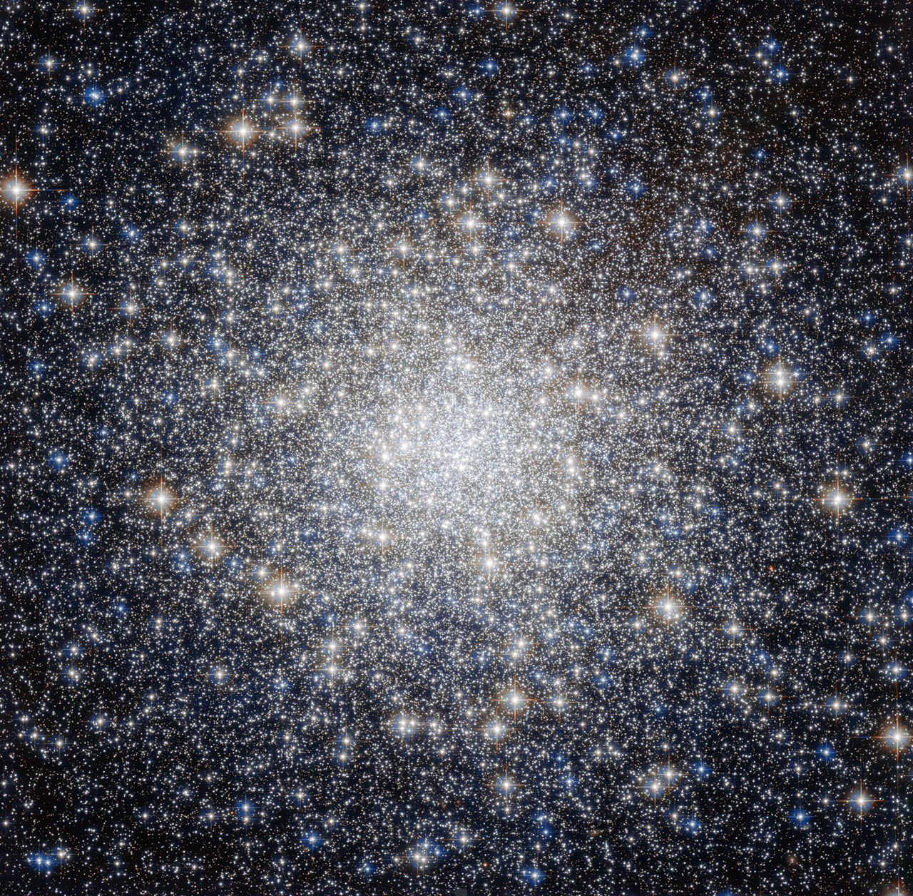

Metal-poor stars are stars whose abundances of elements heavier than hydrogen and helium — collectively called 'metals' by astronomers — are significantly lower than those of the Sun. Metallicity is typically expressed using the [Fe/H] index, the logarithmic ratio of iron to hydrogen relative to the solar value: a star with [Fe/H] = −1 has one-tenth the solar iron abundance, while [Fe/H] = −3 means one-thousandth solar. Stars are metal-poor because they formed early in cosmic history, before successive generations of supernova explosions had enriched the interstellar medium with heavy elements.

ESA/Hubble & NASA; Acknowledgement: Gilles Chapdelaine
The standard classification scheme (Beers & Christlieb 2005) divides metal-poor stars into five tiers by iron abundance: metal-poor (MP) stars have [Fe/H] < −1.0; very metal-poor (VMP) stars have [Fe/H] < −2.0; extremely metal-poor (EMP) stars have [Fe/H] < −3.0; ultra metal-poor (UMP) stars have [Fe/H] < −4.0; and hyper metal-poor (HMP) stars have [Fe/H] < −5.0. The current iron-abundance record holder is SMSS J031300.36−670839.3, discovered by Keller et al. (2014) using the SkyMapper survey, with [Fe/H] < −7.1 — no iron is detectable in its spectrum at all.
Metal-poor stars are overwhelmingly old Population II objects found in the Milky Way's stellar halo and in globular clusters such as Messier 92 and NGC 6397, both of which have ages approaching 13 billion years. They are rare in the thin disk, which has been continuously enriched over the Galaxy's lifetime. Because heavy elements are a minority constituent, metal-poor stars tend to be bluer and have simpler atmospheric structures than metal-rich stars of the same mass. Many halo stars show enhanced ratios of alpha elements (oxygen, magnesium, silicon, calcium, titanium) relative to iron, reflecting early enrichment by core-collapse supernovae before Type Ia supernovae had time to deposit iron.
A significant sub-population are carbon-enhanced metal-poor (CEMP) stars, defined by [C/Fe] > +0.7. CEMP stars are absent from Population I but constitute approximately 12% of stars with [Fe/H] < −2 and approximately 20% at [Fe/H] < −2.5. CEMP-s stars are attributed to mass transfer from an asymptotic giant branch companion in a binary system; CEMP-no stars are thought to preserve nucleosynthetic signatures of early massive stars.
Metal-poor stars are identified by spectroscopy: weak or absent Ca II H&K absorption lines and weak iron lines signal low metallicity. Systematic surveys — the HK Survey, the Hamburg/ESO Survey (HES), and more recently Pristine, SkyMapper, and GALAH — have expanded the known sample from a handful of objects to hundreds of EMP stars and several confirmed HMP stars. Because the surface chemical abundances of the most metal-poor halo stars are nearly unchanged since their formation, they serve as fossil records of nucleosynthesis in the early Universe and as the closest observational proxy for the hypothetical metal-free Population III stars.